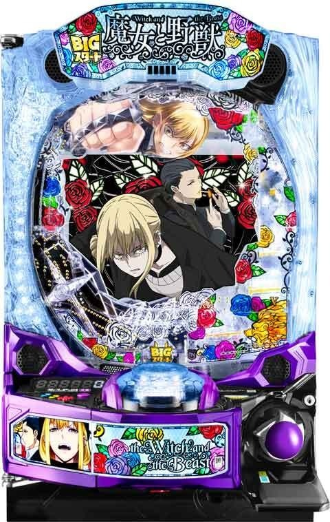

e魔女と野獣
BIGスタートから復讐RUSHへ。W上乗せで最大9000個帯を狙う。
- 導入
- 2026年9月
- メーカー
- 藤商事
- 分類
- パチンコ
主要スペック
大当り合算約1/349、図柄揃い約1/399、復讐RUSH突入約51%のLT・上乗せ特化型スマパチです。ST75回・継続約55%と、運命分岐からの大型出玉を簡易体験できます。
- 大当り合算約1/349・図柄揃い約1/399
- 図柄揃い時RUSH突入約51%
- 復讐RUSHはST75回・継続約55%
e魔女と野獣の見どころと計算条件
大当り合算約1/349、図柄揃い約1/399、復讐RUSH突入約51%のLT・上乗せ特化型スマパチです。ST75回・継続約55%と、運命分岐からの大型出玉を簡易体験できます。
e魔女と野獣を数字で早分かり
結果では表記出玉と実獲得出玉を分け、250玉貸し・28玉交換の固定条件で差玉と収支を計算します。
30秒で分かるe魔女と野獣
継続率よりも1回の大型上乗せを重視する人向けです。
こんな遊び方に向いている
- 2800個以上の出玉演出を楽しみたい
- 運命分岐のPUSH勝負を試したい
遊ぶ前に確認したいこと
- 約51%は図柄揃い基準
- CHARGE込みの突入は約44.6%
図柄揃いとCHARGEの合算
通常時の図柄揃いは約1/399、復讐CHARGEは約1/2799で、合算大当りは約1/349です。図柄揃い時のRUSH突入は約51%。
CHARGEを含む全大当り基準ではRUSH突入が約44.6%になるため、シミュレーターは合算約1/349と突入約44.6%を組み合わせます。
ST75回・継続約55%
復讐RUSH中は約1/95を75回で抽選し、継続率は約55%です。初回RUSH中の大当り後は必ず運命分岐へ進み、2連目以降は約52%で分岐します。
サイトでは連チャン中の上位昇格として運命分岐を表示し、成功率約50%の個別抽選は大型出玉振り分けへまとめています。
W上乗せと大型出玉
RUSH中は20R・40R・60R相当の大当りがあり、約2800個・約5600個・約8400個の代表出玉として扱います。公表上は最大9000個帯までの出玉があります。
実際のアタッカー、V入賞、上乗せループ、打ち方による差は完全再現しません。結果では表記出玉と簡易的な実獲得出玉を分けます。
固定条件
- 27.0回/1,000円・250玉貸し・28玉交換で固定
- 合算初当りまでの平均投資目安は約13,000円
- 運命分岐とW上乗せは代表値で簡易化
- 結果はマイ記録と機種別ランキングへ保存
平均回転と投資目安の計算
通常時の図柄揃い・CHARGE確率は約1/349です。当サイトでは、1,000円あたり27回転という機種別の固定条件を使い、平均投資目安を「349 ÷ 27 × 1,000円」で計算します。この条件では約12,900円が平均投資の目安です。
BIGスタート、250玉貸し・28玉交換で固定し、復讐RUSH突入率44.6%と継続率55%を簡易抽選します。表記出玉とは別に、打ち出しとオーバー入賞を簡易反映した実獲得出玉を収支へ使用します。平均値は長期間の理論上の目安であり、1回ごとの結果や実際の遊技収支を保証するものではありません。
シミュレーション結果の見方
当るまで図柄揃い・CHARGEまでの回転数と投資目安
RUSH復讐RUSHへの突入と連チャン回数
出玉表記出玉と、打ち出しを反映した実獲得出玉
最終収支実獲得出玉を28玉交換で換算した収支目安
結果は自動で「マイ記録」に保存され、同じ機種を何回試したか、最高収支、勝率をあとから確認できます。
簡易シミュレーターについて
図柄揃い・CHARGE・復讐RUSH・出玉の流れを固定条件で体験できます。JavaScriptを有効にすると、この位置にシミュレーター、演出、マイ記録、機種別ランキングが表示されます。
結果は娯楽・確率理解のための参考表示です。金銭的価値や交換価値はなく、実際の勝敗や収支を保証しません。18歳未満の方の利用はお控えください。
e魔女と野獣のよくある質問
e魔女と野獣はどんな台？
大当り合算約1/349、図柄揃い約1/399、復讐RUSH突入約51%のLT・上乗せ特化型スマパチです。 大当り合算約1/349・図柄揃い約1/399が主な確認ポイントです。
e魔女と野獣の平均投資目安は？
当サイトの固定条件では1,000円あたり27回転として、平均12,900円が目安です。実店舗の回転率や持ち玉状況で変わるため、実収支を保証する値ではありません。
シミュレーターでは何を体験できる？
図柄揃い・CHARGEまでの回転数、復讐RUSHへの突入、連チャンと出玉、さらに運命分岐を固定条件で簡易抽選します。実機の全演出や内部状態を完全再現するものではありません。
出玉と収支はどう計算する？
スペック上の表記出玉とは別に、打ち出しロスとオーバー入賞を簡易反映した実獲得出玉を算出します。250玉貸し・28玉交換の固定条件で差玉と収支目安を表示します。